【保姆级教程】快速拿下微软和领英推出的「生成式人工智能职业证书」！
来源：https://kqubish8iq0.feishu.cn/docx/ZshRdZIAioncIKxjvAlckJxun0c
一、写在前面
大家好，我是龙珠圈友飞掌柜。今天针对如何快速拿下微软和领英推出的「生成式人工智能职业证书」进行经验分享。实操中用到GPT3.5和claude，因此对于没有4的同学来说非常友好。
由于考试只有3次机会，因此我分享的是2个半小时快速看完视频和通过考试的方法，但不代表拿下这样的证书就是投机取巧，所以以下3点请你务必牢记：
- 视频内容、单元测验值得用心学习，如果你都认真看了，会学到很多AI相关知识，并且考试通过大概率也没问题；
- 利用claude和chatGPT做单元测验和考试题，一方面是为了节省时间，毕竟正常3小时49分的课程学习+至少30分钟的单元测验+1小时40分的证书考试，可能会消耗大家一整天的时间；另一方面我也想测试一下用生成式AI工具做生成式AI试题，究竟准确率有多少；
- claude和chatGPT得到的是中文答案，我建议你仔细阅读，毕竟都是专业知识，翻译的过程、作答的过程、你复制粘贴的过程，都是在学习，要过脑子，这样效率最高，亲身体验告诉我，全身心投入2个半小时，足以学完所有东西+考试通过。
【考试地址】https://www.linkedin.com/learning/paths/career-essentials-in-generative-ai-by-microsoft-and-linkedin（需要魔法+谷歌邮箱/微软邮箱）
二、证书背景
2023年7月，微软和领英推出了生成式人工智能职业证书
官方介绍如下：探索在职业中应用生成式人工智能所需的技能，学习人工智能和生成式人工智能功能的核心概念。
- 培养对生成式人工智能模型的理解。
- 了解使用生成式人工智能时的伦理考虑。
- 探索生成式人工智能工具的影响。
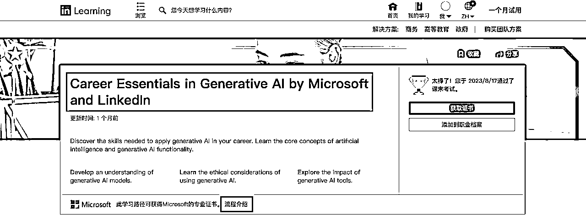
三、流程介绍
想获得证书，按照官方要求，只需满足以下3点：
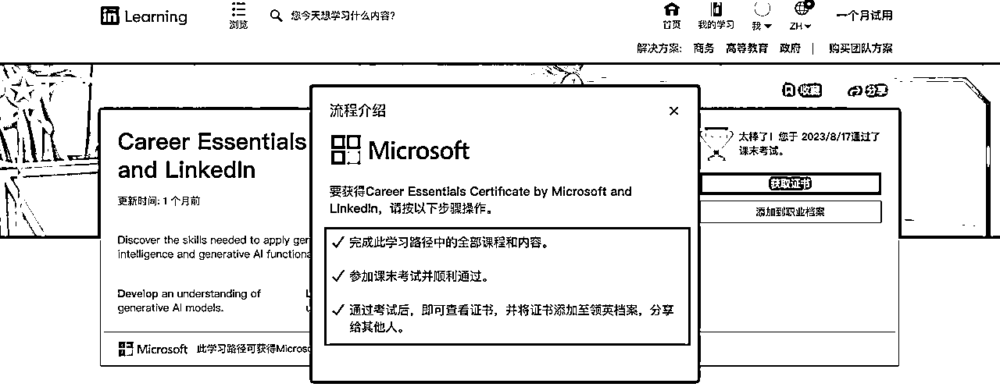
- 所有课程均为视频，一共5个大课，每一课中还有几节小课
- 学完课程后，会显示完成时间，可以添加到领英的职业档案（添加后会显示已在职业档案中列出）
- 学完所有课程，可以参加考试，考试正确率70%以上通过，则可下载证书（证书为PDF版，图片自己截图即可）
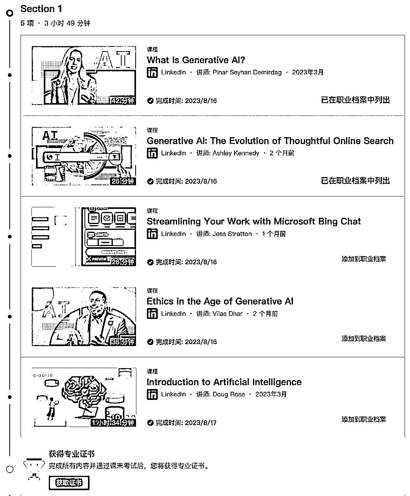
四、如何快速看完视频内容
- 倍速播放：选择2倍；
- 字幕选择：中文字幕；
- 自动播放：1个视频播放完毕后，会自动下一个，但是第一单元视频播放完毕后，会弹窗【试用一个月领英会员、观看免费视频两个按钮】，需要手动点击【观看免费视频】，之后的视频都会自动播放。
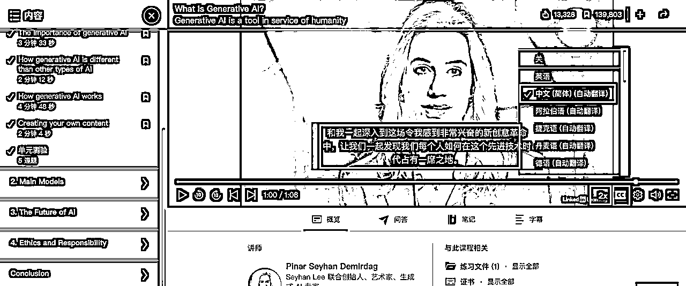
五、如何快速完成单元测验
- 屏幕计时、莫要着急：每个单元播放完最后一个视频，会自动跳到单元测验，并且屏幕会倒计时，此时不要着急，因为倒计时结束也没关系，不影响证书，看完该课程所有视频再做单元测验也没问题，当然，你要是当下立刻想做，也可。
- 正确与否、没有关系：单元测验的答案，选择正确和错误，都不影响证书，并且可以重复作答，还可以看到正确答案和解释。
- 选择答案、工具提效：我是利用claude辅助作答，准确率95%，比如针对下面这道题，我将指令输入：
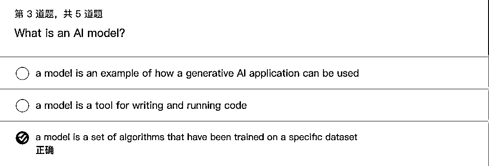
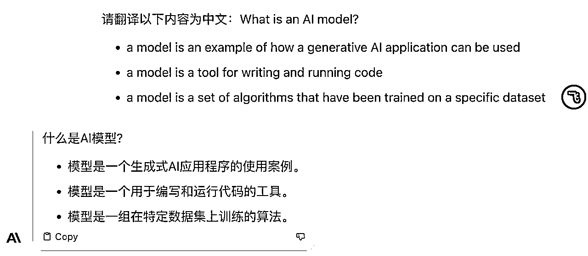
- 这种方式只利用了翻译功能，我按照视频学习内容，选择答案C，但是对于做题来说，太慢了；
- 于是更新指令如下，发现它直接给出正确答案，并且有详细解释，当我眼睛看到“第三个选项”这几个字时，毫不犹豫地选上即可，都不用等它把剩下的内容生成，我已经在输入下一个问题的指令了；
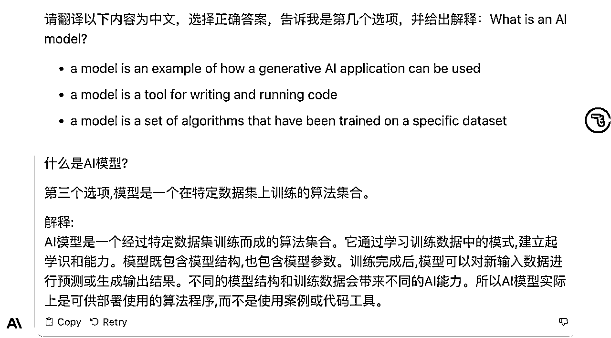
- 此时利用了它的学习功能，本身我们考的就是生成式AI证书，而claude本身生成式AI工具，用来答题真香！
- 按照此方法把所有单元测验快速通过，总计用时10分钟；
- 课程学习和单元测验，如果正常速度，应该是3小时49分钟（这个最后的证书上会写），但倍速播放不影响总时长，也就是我实际用时可能只有不到2小时；
- 如果你正常作答单元测验也没问题，毕竟可以重复做，而且答错也会告诉你正确答案是啥，多做几次加深印象，就当学习了。
六、如何快速通过证书考试
考试只有3次机会，正确率必须大于70%才能通过，用我如下方法，15分钟可快速通过考试。
- 利用截图+文字转图片得到问题：考试页面的文字不能直接复制，所以我用的是先截图+图片转文字的方法，得到问题，这类型的工具很多，我最熟练的是ishot+Camscanner（也就是苹果电脑截图软件+扫描全能王）。
- 利用chatGPT快速作答：将同样的指令发给chatGPT，我用的是3.5，大家也可用4.0试一下。GPT和claude一样，会直接给出正确答案，我亲自测试过，准确率90%，一次性通过考试没问题。
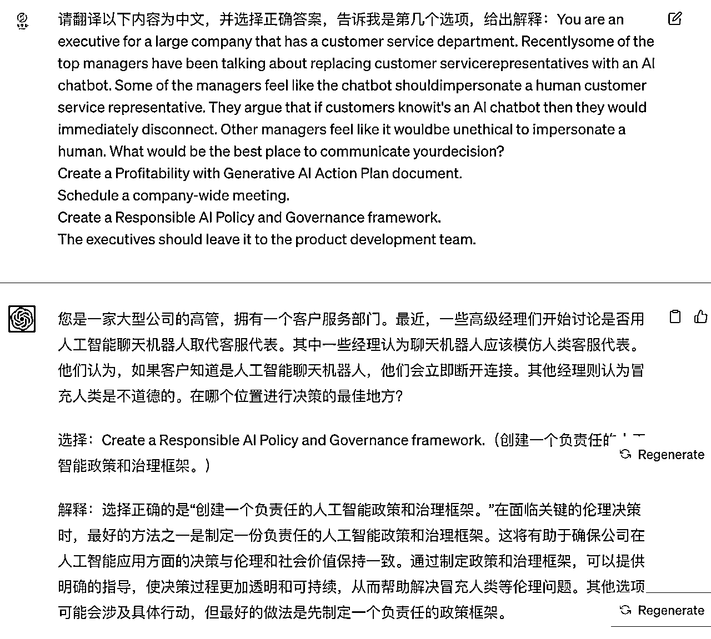
七、课程证书和考试证书
- 课程证书在课程学习页面的右下角，课程证书只有领英的LOGO，毕竟是领英的课程，5门课程学完后就可以下载（能用来和「生成式人工智能职业证书」一起发朋友圈，哈哈哈），见下图：
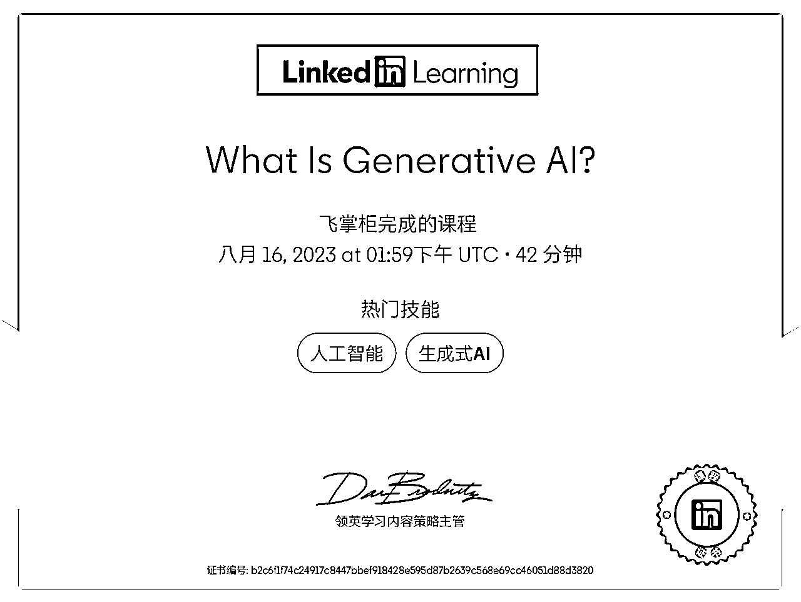
- 考试证书在考试通过页面和课程主页都可以下载，课程证书同时有领英和微软的LOGO，见下图：
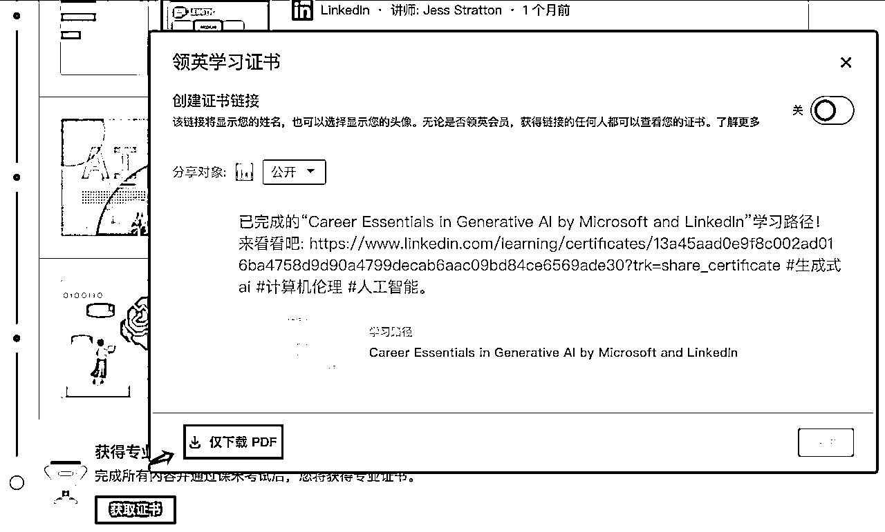
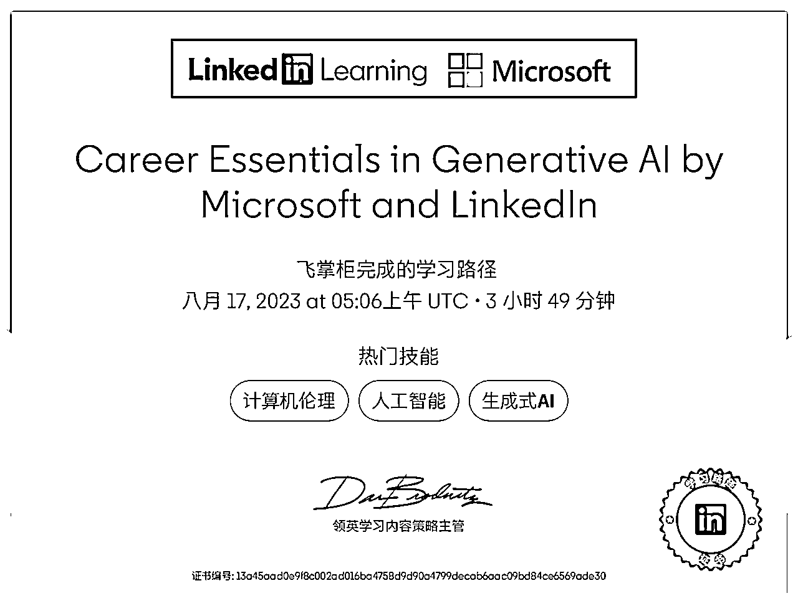